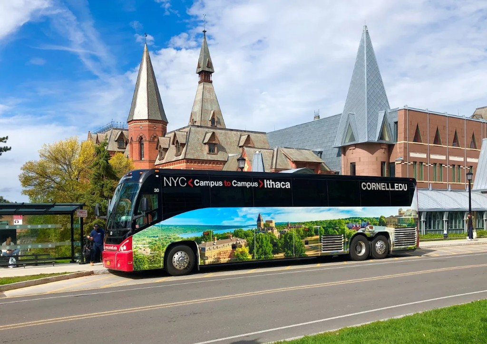

NEUDC 2026 is at Cornell's Physical Sciences Building. Use the sections below to plan your trip.
| Airport | Distance/time | Travel note |
|---|---|---|
| Ithaca Tompkins (ITH) | ~15 min | Closest airport; direct regional flights. No direct public bus to campus. |
| Syracuse (SYR) | ~1 hour | Broader flight options; rental cars and some shuttles available. |
| New York JFK (JFK) | ~4 hours | Major international hub; can combine with Cornell's Campus-to-Campus bus from NYC. |
| Newark (EWR) | ~4 hours | Strong international coverage; can combine with Cornell's Campus-to-Campus bus from NYC. |
Sessions and events are held in the Physical Sciences Building.

This section covers both local transit options: TCAT buses within Ithaca and Cornell's Campus-to-Campus bus between Ithaca and New York City.
TCAT (Tompkins Consolidated Area Transit) is Ithaca's public bus system and runs frequently between Cornell and downtown.

For NEUDC, the closest stop is Goldwin Smith Hall on East Avenue, directly across from the Physical Sciences Building.
You can pay with the Tfare app, a Tcard, or exact cash on board.
Cornell runs daily coaches between Ithaca and New York City, which is useful if you are flying into a New York-area airport.

Reservations are required. Call 607-254-8747 or email c2cbus@cornell.edu.
See the Cornell visitor parking guide, short-term lot map, and virtual permits.
Hotel block information will be posted by summer 2026. Check back soon.